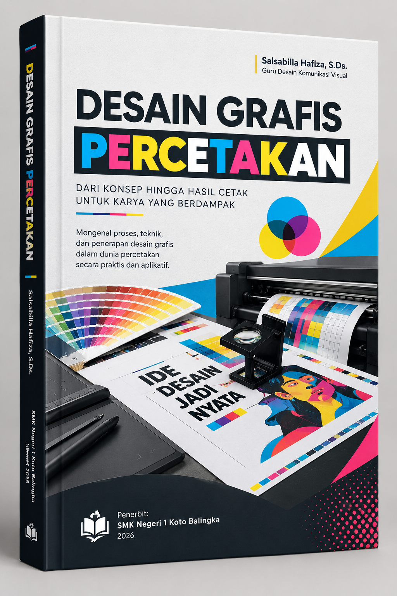
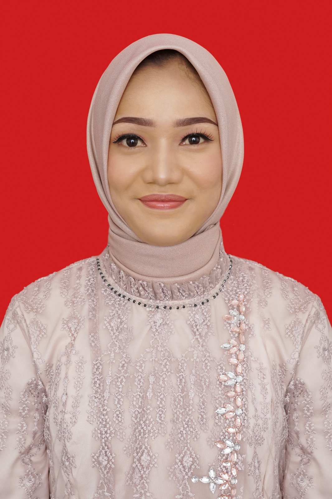

Modul Pembelajaran Multimedia
Kelas XI Semester 1
Sebuah panduan komprehensif yang menggabungkan teori nirmana, tipografi, ilustrasi, hingga penguasaan perangkat lunak vektor dan bitmap untuk mencetak karya desain yang profesional.

Penulis & Pengajar
Berdedikasi dalam membimbing generasi muda di bidang desain komunikasi visual. Modul ini disusun sebagai panduan praktis dan teoretis untuk siswa SMK, mengintegrasikan estetika seni rupa dengan teknologi desain digital terkini.
Kurikulum Terstruktur
9 Bab Utama yang dijabarkan menjadi 16 pertemuan intensif, mencakup teori dasar hingga proyek akhir.
Elemen titik, garis, bidang, dan penerapan dasar nirmana dwimatra.
Pertemuan 02Gempal (volume), tekstur (nyata & semu), dan dimensi warna (hue, value, chroma).
Pertemuan 03Sejarah perkembangan tipografi dari pictograph hingga era komputerisasi.
Pertemuan 04Mengenal karakter font: Roman, Egyptian, Sans Serif, Script, dan Miscellaneous.
Pertemuan 05Prinsip, peralatan, dan teknik menggambar sketsa bentuk, makhluk hidup, dan suasana.
Pertemuan 06Teknik ilustrasi manual (arsir, blok, pointilis) dan pengantar ilustrasi digital.
Pertemuan 07Prinsip proporsi, komposisi, dan teknik perspektif 1, 2, dan 3 titik hilang.
Evaluasi komprehensif materi Bab I s.d Bab IV (Nirmana hingga Perspektif).
Pengenalan CorelDraw, toolbox, color palette, dan manajemen halaman.
Pertemuan 10Teknik penggabungan (Weld, Combine) dan pemotongan (Trim, Simplify, Intersect).
Pertemuan 11Penerapan efek Blend, Contour, Drop Shadow, Envelope, Extrude, dan PowerClip.
Pertemuan 12Pengenalan Adobe Photoshop, area kerja, layer, dan manajemen multi-layer.
Pertemuan 13Penggabungan gambar menggunakan Selection Tool, Layer Masking, dan Quick Masking.
Pertemuan 14Penerapan Filter, Clipping Mask, Adjustment Layer, dan Layer Styles pada teks/objek.
Pertemuan 15Evaluasi dan praktik pembuatan desain brosur cetak (CMYK, 300 DPI, Bleed) menggabungkan vektor & bitmap.
Evaluasi komprehensif materi Bab V s.d Bab IX (Pengolahan Vektor, Bitmap, dan Proyek).